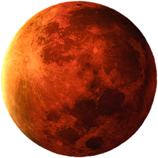
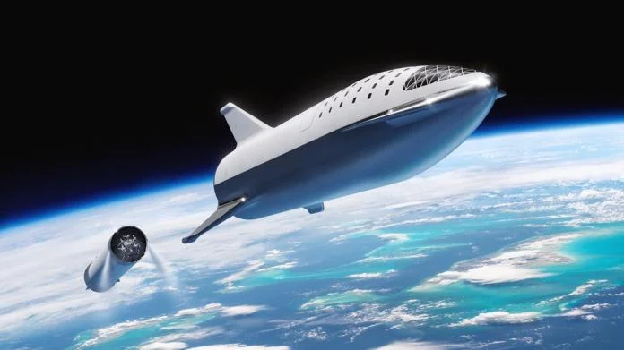
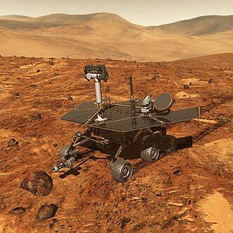

Параметры экспедиции
Дата запуска: 05/22/2028
Продолжительность полёта: 9 месяцев
Количество участников: 5 человек
Место запуска: Космодром Байконур
Название корабля: Орион
Предполагаемая дата возвращения: 05/22/2031
Состав экипажа
| Имя | Должность | Возраст | Главная задача |
|---|---|---|---|
| Анна Волкова | Командир корабля | 44 года | Обеспечить успешное выполнение полетной миссии. |
| Дмитрий Соколов | Бортинженер | 39 лет | Контроль, эксплуатация и поддержание работоспособности бортовых систем. |
| Елена Морозова | Пилот-навигатор | 40 лет | Безопасно и точно провести судно по заданному маршруту от точки старта до точки назначения. |
| Максим Орлов | Судовой врач | 40 лет | Сохранять здоровье, работоспособность и жизнь экипажа. |
| София Лебедева | Специалист по связи | 37 лет | Обеспечивать надёжную и бесперебойную передачу информации. |
Задачи экспедиции
Главная цель миссии — развёртывание базового лагеря, проверка систем выживания и проведение первичных научных работ на поверхности планеты.
- Проверить герметичность и работу систем жизнеобеспечения автономных жилых модулей.
- Собрать образцы марсианского грунта и провести их первичный химический анализ.
- Установить и настроить метеорологическое оборудование и солнечные панели станции.
- Протестировать стабильность радиосвязи и передачу телеметрии между Марсом и Землёй .
- Провести разведку прилегающей местности с помощью автономных роверов для составления карты ресурсов.
Дополнительные исследования
- Изучить влияние марсианской пыли и радиации на защитные материалы скафандров.
- Провести эксперимент по выращиванию растений в условиях искусственной гравитации и грунта.
- Зафиксировать сейсмическую активность коры в районе посадки модулей.
План экспедиции
| День миссии | Этап | Место | Описание |
|---|---|---|---|
| День 1 | Запуск | Космодром "Байконур" | Старт ракеты-носителя с экипажем из 5 человек под командованием Анны Волковой. |
| День 2-270 | Перелет | Трасса Земля — Марс | Девятимесячный межпланетный полёт, навигация по курсу и регулярный медосмотр экипажа. |
| День 271 | Посадка | Поверхность Марса | Вход в атмосферу, торможение двигателями и мягкая посадка модуля в районе высадки. |
| День 272-290 | Развёртывание базы | Базовый лагерь (Марс) | Сборка автономных жилых модулей, подключение солнечных панелей и настройка связи с Землёй. |
| День 291-825 | Исследования | Научная станция и окрестности | Сбор образцов грунта, эксперимент по выращиванию растений и разведка местности роверами. |
| День 826-1095 | Консервация и возвращение | Трасса Марс — Земля | Перевод станции в автономный режим, старт с Марса и возвращение экипажа домой 22 мая 2031 года. |
Фотографии экспедиции



Космическая техника
Основные аппараты и модули, используемые в рамках текущей космической миссии для исследования поверхности и обеспечения работы экипажа.
| Название | Тип | Назначение | Количество |
|---|---|---|---|
| Орион | Корабль | Доставка экипажа и грузов на орбиту | 1 |
| Исследователь-1 | Марсоход | Анализ грунта и поиск следов воды на поверхности | 2 |
| Стриж-М | Исследовательский дрон | Аэросъёмка местности и разведка каньонов | 4 |
| Оазис-Альфа | Жилой модуль | Проживание, отдых и работа астронавтов на базе | 3 |
| Гелиос-2 | Орбитальный ретранслятор | Обеспечение бесперебойной связи между базой и Землёй | 2 |
Кого возьмут в экспедицию
Для участия в экспедиции на Марс будут отобраны кандидаты, которые обладают необходимыми знаниями, физической подготовкой и умеют работать в команде.
- Иметь высшее техническое или медицинское образование.
- Обладать хорошей физической подготовкой и крепким здоровьем.
- Уметь сохранять спокойствие и принимать решения в экстремальных ситуациях.
- Уметь работать в команде и находить общий язык с другими участниками.
- Иметь навыки работы с современным оборудованием и компьютерными системами.
| Проверка | Минимальное требование | Обязательна |
|---|---|---|
| Медицинская | Отсутствие хронических заболеваний и хорошее зрение | Да |
| Физическая | Сдача нормативов на выносливость и переносимость перегрузок | Да |
| Профессиональная | Опыт работы по специальности от 5 лет и знание систем корабля | Да |
| Психологическая | Успешное прохождение теста на изоляцию и стрессоустойчивость | Нет |
Заявка на участие в экспедиции
Заполните форму ниже, чтобы присоединиться к нашей команде исследователей. Мы свяжемся с вами после рассмотрения анкеты.
Этапы отбора кандидатов
| Этап | Название | Продолжительность | Результат |
|---|---|---|---|
| 1 | Рассмотрение анкеты | 3 рабочих дня | Приглашение на собеседование |
| 2 | Собеседование | 1 час | Оценка мотивации и навыков |
| 3 | Медицинское обследование | 2 дня | Заключение о состоянии здоровья |
| 4 | Практическое испытание | 4 часа | Подтверждение квалификации |
| 5 | Окончательное решение | 5 рабочих дней | Зачисление в команду или отказ |